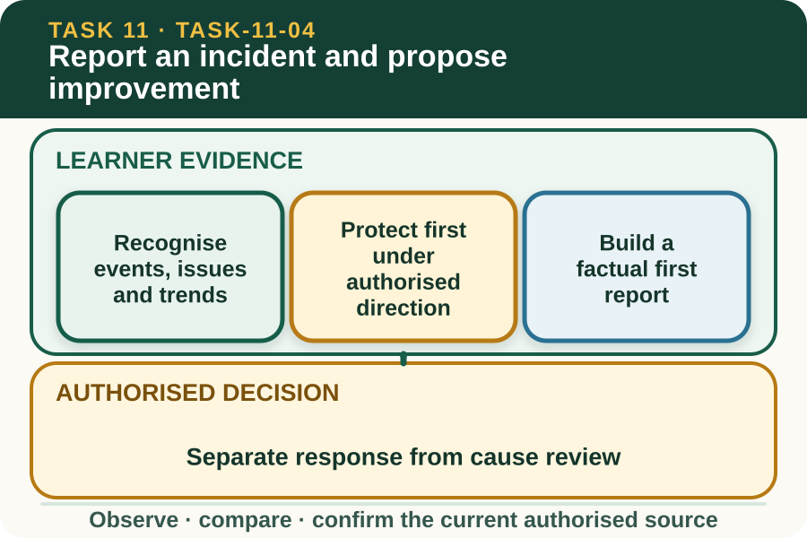

Classroom presentation · 8 slides
Report an incident and propose improvement
Task 11 · 1 of 8
Report an incident and propose improvement
Separate immediate authorised response, factual reporting, cause review and a measurable improvement.

Speaker notes
Teaching move (web-deck purpose): Use the module visual and the fictional worked example to move students from observation to a source-led decision. Ask students to name the evidence, the authority gap and the next safe communication step. Misconception and help: Record what can be observed now and refer what cannot be established. When, where, what seen, where moving, task status, who told. Applied action: Separate report, review and improvement. Use a fictional environmental event card. Complete a factual first-report panel, an evidence-needed panel and a measurable improvement panel. Do not write a property response or external notification procedure. Boundary: This supplementary learning draws on mapped AHCWRK211 concepts. Current signed TAS and RTO documents control cohort delivery, assessment and competency decisions; current workplace procedures, supervision and authorised sources control real work. [Sources] - Source basis: AHCWRK211 Release 1 requirements to report hazards, breaches or possible breaches, follow workplace practices and suggest improvements; NESA Sustainability focus-area reporting concepts. Current local and regulatory sources control all real response and notification. - Visual visual-task-11-04: Generated locally from accepted Stage 05 module headings; no external image copied. - Course visual manifest: work/pi/visuals/visual-manifest.json
Task 11 · 2 of 8
Map the learning
- Recognise events, issues and trends
- Protect first, but only through authorised direction
- Build a factual first report
Retrieve: What is the strongest first report of cloudy water at a fictional drainage point?
Speaker notes
Teaching move (learning map): Use the module visual and the fictional worked example to move students from observation to a source-led decision. Ask students to name the evidence, the authority gap and the next safe communication step. Misconception and help: Record what can be observed now and refer what cannot be established. When, where, what seen, where moving, task status, who told. Applied action: Separate report, review and improvement. Use a fictional environmental event card. Complete a factual first-report panel, an evidence-needed panel and a measurable improvement panel. Do not write a property response or external notification procedure. Boundary: This supplementary learning draws on mapped AHCWRK211 concepts. Current signed TAS and RTO documents control cohort delivery, assessment and competency decisions; current workplace procedures, supervision and authorised sources control real work. [Sources] - Source basis: AHCWRK211 Release 1 requirements to report hazards, breaches or possible breaches, follow workplace practices and suggest improvements; NESA Sustainability focus-area reporting concepts. Current local and regulatory sources control all real response and notification. - Visual visual-task-11-04: Generated locally from accepted Stage 05 module headings; no external image copied. - Course visual manifest: work/pi/visuals/visual-manifest.json
Task 11 · 3 of 8
Notice the evidence
Recognise events, issues and trends
An environmental event is a specific occurrence, an issue is a condition needing attention and a trend is a pattern across comparable observations. One record can begin an investigation but rarely establishes a long-term trend or cause.
Use the workplace's current definitions and reporting thresholds. The supplementary learning site does not decide legal significance, external notification requirements or the authorised property response.
Protect first, but only through authorised direction
When an unexpected environmental condition is observed, the learner keeps outside the affected area, avoids disturbing evidence and reports through the current workplace channel. Any immediate protective action must come from training, the local plan and supervisor direction.
Do not improvise because the event appears minor or because a classroom example seems similar. Identity, exposure and site controls may be different from what is visible.
Speaker notes
Teaching move (theory idea 1): Use the module visual and the fictional worked example to move students from observation to a source-led decision. Ask students to name the evidence, the authority gap and the next safe communication step. Misconception and help: Record what can be observed now and refer what cannot be established. When, where, what seen, where moving, task status, who told. Applied action: Separate report, review and improvement. Use a fictional environmental event card. Complete a factual first-report panel, an evidence-needed panel and a measurable improvement panel. Do not write a property response or external notification procedure. Boundary: This supplementary learning draws on mapped AHCWRK211 concepts. Current signed TAS and RTO documents control cohort delivery, assessment and competency decisions; current workplace procedures, supervision and authorised sources control real work. [Sources] - Source basis: AHCWRK211 Release 1 requirements to report hazards, breaches or possible breaches, follow workplace practices and suggest improvements; NESA Sustainability focus-area reporting concepts. Current local and regulatory sources control all real response and notification. - Visual visual-task-11-04: Generated locally from accepted Stage 05 module headings; no external image copied. - Course visual manifest: work/pi/visuals/visual-manifest.json
Task 11 · 4 of 8
Use the source boundary
Build a factual first report
The first report should state date, time, exact approved location reference, observable condition, affected or potentially affected area, present task status, people already notified and any authorised action confirmed. Record unknowns as unknown.
Avoid diagnosis, blame, estimated legal consequences and unnecessary personal detail. A concise factual report helps the authorised person make decisions without first removing unsupported claims or assumptions.
Separate response from cause review
The immediate priority is controlled management of the event; cause review occurs when the workplace decides the situation is ready for investigation. A learner may contribute observations but should not assign fault from one scene.
Review can examine task design, information, resources, communication, maintenance and supervision as system factors. The aim is to strengthen work, not simply identify someone to blame.
Speaker notes
Teaching move (theory idea 2): Use the module visual and the fictional worked example to move students from observation to a source-led decision. Ask students to name the evidence, the authority gap and the next safe communication step. Misconception and help: Record what can be observed now and refer what cannot be established. When, where, what seen, where moving, task status, who told. Applied action: Separate report, review and improvement. Use a fictional environmental event card. Complete a factual first-report panel, an evidence-needed panel and a measurable improvement panel. Do not write a property response or external notification procedure. Boundary: This supplementary learning draws on mapped AHCWRK211 concepts. Current signed TAS and RTO documents control cohort delivery, assessment and competency decisions; current workplace procedures, supervision and authorised sources control real work. [Sources] - Source basis: AHCWRK211 Release 1 requirements to report hazards, breaches or possible breaches, follow workplace practices and suggest improvements; NESA Sustainability focus-area reporting concepts. Current local and regulatory sources control all real response and notification. - Visual visual-task-11-04: Generated locally from accepted Stage 05 module headings; no external image copied. - Course visual manifest: work/pi/visuals/visual-manifest.json
Task 11 · 5 of 8
Connect evidence to action
Turn findings into a measurable proposal
An improvement proposal should describe the supported problem, proposed change, decision owner, resource needed, measure, review period and guardrail. It should address a likely system factor rather than promise that the event can never recur.
Keep the proposal within the learner's work area and authority. Where a change affects property infrastructure, legal controls or specialist work, recommend supervisor review rather than presenting the change as approved.
Close the learning loop
After an authorised change, compare the new observations with the baseline and check for unintended effects. Share the result through the workplace system so the lesson reaches future planning and induction.
A saved website response can support discussion and teacher feedback. It is not a regulator notification, workplace incident record, formal assessment instrument or competency decision.
Speaker notes
Teaching move (theory idea 3): Use the module visual and the fictional worked example to move students from observation to a source-led decision. Ask students to name the evidence, the authority gap and the next safe communication step. Misconception and help: Record what can be observed now and refer what cannot be established. When, where, what seen, where moving, task status, who told. Applied action: Separate report, review and improvement. Use a fictional environmental event card. Complete a factual first-report panel, an evidence-needed panel and a measurable improvement panel. Do not write a property response or external notification procedure. Boundary: This supplementary learning draws on mapped AHCWRK211 concepts. Current signed TAS and RTO documents control cohort delivery, assessment and competency decisions; current workplace procedures, supervision and authorised sources control real work. [Sources] - Source basis: AHCWRK211 Release 1 requirements to report hazards, breaches or possible breaches, follow workplace practices and suggest improvements; NESA Sustainability focus-area reporting concepts. Current local and regulatory sources control all real response and notification. - Visual visual-task-11-04: Generated locally from accepted Stage 05 module headings; no external image copied. - Course visual manifest: work/pi/visuals/visual-manifest.json
Task 11 · 6 of 8
Retrieve and check
What is the strongest first report of cloudy water at a fictional drainage point?
- Name the contaminant and responsible person from appearance.
- Record time, location, observable change, flow direction, task status and person notified.
- Wait until visible harm occurs so the report is definite.
Teacher reveal
Correct. These are factual details the authorised person can use.
When, where, what seen, where moving, task status, who told.
Speaker notes
Teaching move (retrieval): Use the module visual and the fictional worked example to move students from observation to a source-led decision. Ask students to name the evidence, the authority gap and the next safe communication step. Misconception and help: Record what can be observed now and refer what cannot be established. When, where, what seen, where moving, task status, who told. Applied action: Separate report, review and improvement. Use a fictional environmental event card. Complete a factual first-report panel, an evidence-needed panel and a measurable improvement panel. Do not write a property response or external notification procedure. Boundary: This supplementary learning draws on mapped AHCWRK211 concepts. Current signed TAS and RTO documents control cohort delivery, assessment and competency decisions; current workplace procedures, supervision and authorised sources control real work. [Sources] - Source basis: AHCWRK211 Release 1 requirements to report hazards, breaches or possible breaches, follow workplace practices and suggest improvements; NESA Sustainability focus-area reporting concepts. Current local and regulatory sources control all real response and notification. - Visual visual-task-11-04: Generated locally from accepted Stage 05 module headings; no external image copied. - Course visual manifest: work/pi/visuals/visual-manifest.json Use option-specific feedback after the learner commits to an answer.
Task 11 · 7 of 8
Construct a source-led response
Write a factual first report and a separate improvement proposal for a fictional environmental event. Keep unknowns explicit and all property actions controlled.
- At [fictional date/time] in location… I observed…
- The possible pathway is… and the current task status is…
- I notified… and the authorised response remains…
- I cannot conclude… because…
- A later cause-review question is…
- A measurable supervisor-reviewed improvement could… and would be checked by…
Success criteria
- Uses factual, timed and located observations
- Separates unknowns from supported conclusions
- Keeps immediate and legal responses with authorised sources
- Proposes a measurable improvement with an owner and review
Speaker notes
Teaching move (guided written response): Use the module visual and the fictional worked example to move students from observation to a source-led decision. Ask students to name the evidence, the authority gap and the next safe communication step. Misconception and help: Record what can be observed now and refer what cannot be established. When, where, what seen, where moving, task status, who told. Applied action: Separate report, review and improvement. Use a fictional environmental event card. Complete a factual first-report panel, an evidence-needed panel and a measurable improvement panel. Do not write a property response or external notification procedure. Boundary: This supplementary learning draws on mapped AHCWRK211 concepts. Current signed TAS and RTO documents control cohort delivery, assessment and competency decisions; current workplace procedures, supervision and authorised sources control real work. [Sources] - Source basis: AHCWRK211 Release 1 requirements to report hazards, breaches or possible breaches, follow workplace practices and suggest improvements; NESA Sustainability focus-area reporting concepts. Current local and regulatory sources control all real response and notification. - Visual visual-task-11-04: Generated locally from accepted Stage 05 module headings; no external image copied. - Course visual manifest: work/pi/visuals/visual-manifest.json
Task 11 · 8 of 8
Close the loop
Separate report, review and improvement
Use a fictional environmental event card. Complete a factual first-report panel, an evidence-needed panel and a measurable improvement panel. Do not write a property response or external notification procedure.
- Name the strongest evidence in the scenario.
- Explain the decision or referral it supports.
- State which current source or authorised person controls real work.
Boundary: This supplementary learning draws on mapped AHCWRK211 concepts. Current signed TAS and RTO documents control cohort delivery, assessment and competency decisions; current workplace procedures, supervision and authorised sources control real work.
Speaker notes
Teaching move (exit and application): Use the module visual and the fictional worked example to move students from observation to a source-led decision. Ask students to name the evidence, the authority gap and the next safe communication step. Misconception and help: Record what can be observed now and refer what cannot be established. When, where, what seen, where moving, task status, who told. Applied action: Separate report, review and improvement. Use a fictional environmental event card. Complete a factual first-report panel, an evidence-needed panel and a measurable improvement panel. Do not write a property response or external notification procedure. Boundary: This supplementary learning draws on mapped AHCWRK211 concepts. Current signed TAS and RTO documents control cohort delivery, assessment and competency decisions; current workplace procedures, supervision and authorised sources control real work. [Sources] - Source basis: AHCWRK211 Release 1 requirements to report hazards, breaches or possible breaches, follow workplace practices and suggest improvements; NESA Sustainability focus-area reporting concepts. Current local and regulatory sources control all real response and notification. - Visual visual-task-11-04: Generated locally from accepted Stage 05 module headings; no external image copied. - Course visual manifest: work/pi/visuals/visual-manifest.json